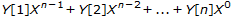

Y must be a simple numeric array. X must be a simple numeric array. R is the numeric array which results from the evaluation of Y in the number system with radix X.
X and Y are conformable if the length of the last axis of X is the same as the length of the first axis of Y. A scalar or unit vector is extended to a vector of the required length. If the last axis of X or the first axis of Y has a length of 1, the array is extended along that axis to conform with the other argument.
The shape of R is the catenation of the shape of X less the last dimension with the shape of Y less the first dimension. That is:
⍴R ←→ (¯1↓⍴X),1↓⍴Y
For vector arguments, each element of X defines the ratio between the units for corresponding pairs of elements in Y. The first element of X has no effect on the result.
This function is also known as Base Value.
60 60⊥3 13 193 0 60⊥3 13 193 60⊥3 13 193 2⊥1 0 1 0 10
If X is a scalar and Y a vector of length n, decode evaluates the polynomial(Index origin 1):

2⊥1 2 3 4 26 3⊥1 2 3 4 58 1j1⊥1 2 3 4 5J9
For higher-rank array arguments, each of the vectors along the last axis of X is taken as the radix vector for each of the vectors along the first axis of Y.
M 0 0 0 0 1 1 1 1 0 0 1 1 0 0 1 1 0 1 0 1 0 1 0 1 A 1 1 1 2 2 2 3 3 3 4 4 4 A⊥M 0 1 1 2 1 2 2 3 0 1 2 3 4 5 6 7 0 1 3 4 9 10 12 13 0 1 4 5 16 17 20 21
Scalar extension may be applied:
2⊥M 0 1 2 3 4 5 6 7
Extension along a unit axis may be applied:
+A←2 1⍴2 10 2 10 A⊥M 0 1 2 3 4 5 6 7 0 1 10 11 100 101 110 111